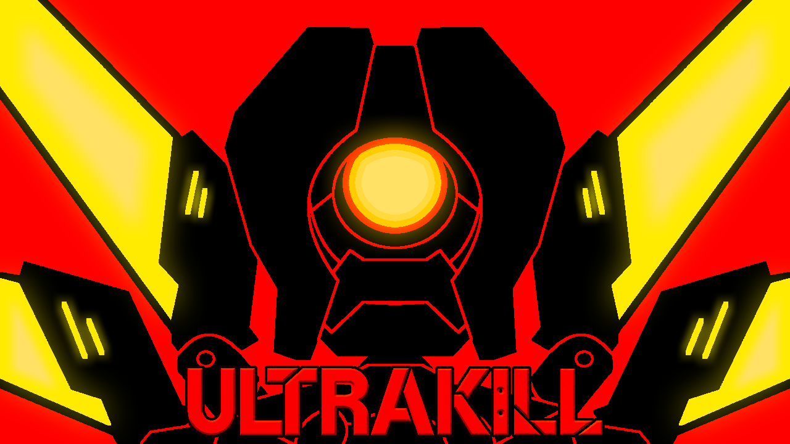

Добро пожаловать в мир ULTRAKILL Здесь ты найдёшь всё, что нужно, чтобы лучше понять хаотичный, но увлекательный геймплей ULTRAKILL. Эта игра — настоящий праздник скорости, точности и экспериментальных техник, которые делают каждый бой уникальным. Мы собрали полезную информацию о самых интересных приёмах, которые используют игроки: Техники передвижения — от ускоренных прыжков до полётов с помощью физики и немного магии. Техники владения оружием — потому что просто стрелять скучно, а вот стрельба по монетам в воздухе или ускорение снарядов — это уже искусство. В каждом разделе — короткие описания, демонстрации и пояснения, чтобы ты мог сразу применить знания в бою. Исследуй, пробуй и играй с удовольствием! ULTRAKILL — это не только про урон, но и про стиль.
